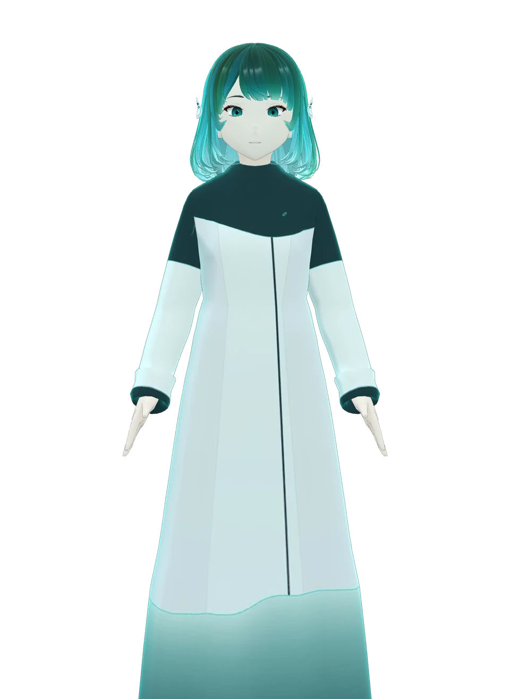
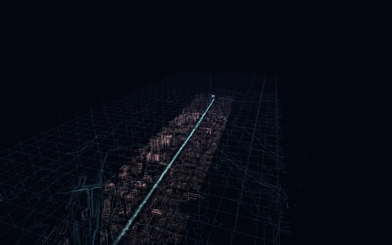

人の尺度を越えて、
世界と関わる。
現実世界と計算世界をつなぐ。そのあいだに、依代・碧という新たな身体を置く。
感覚の外にある手がかりを測り、AIと人が解釈を確かめ、物語と道具で現実の場所へ返す。答えを決めるためではなく、もっと広く見て、考え、世界との関係を育てるために。
体験をはじめる ↓エッセンス版を読む ↗
3Dを読み込めませんでした。碧の静止画と、本文を読むことができます。
なぞって見回す · 矢印キーでも操作できます
知ることは、
見ることを変える。
顕微鏡やセンサーは、人の身体だけでは届かなかった現象を手がかりに変えた。しかし、見えるようになることと、意味が分かることのあいだには距離がある。AIは大量の情報を結び、比べ、仮説をつくる助けになる。人はその出どころと限界を確かめ、現実で問い直す。
mitsulabが開発するのは、道具を閉じたあとにも残る「ミカタ」だ。答えは一つではない。より広く認識することで、ほかの生きものや人の立場を想像し、関わり方を考えるきっかけが生まれる。そして、世界を知るほど、世界はもっと面白くなる。
認知の拡張は、個人の能力を比較・採点することではありません。一人の中で、道具を通じて受けとり方を増やす試みです。
世界を感じる、六つの層。
下の言葉を押すと、どこに手を入れるかが見えます。一直線の正解ではなく、行き来する関係です。
同じ花。違う手がかり。
同じ3Dの花に、異なる手がかりを重ねます。色を見て、模様を重ね、地面の下へ。ハチの主観や、この花の観測値を再現したものではありません。

3Dを読み込めませんでした。手がかりの選択から、それぞれの説明を読むことができます。
手がかりを選ぶ
横になぞる／矢印キーで回転、＋／−で距離、Homeで正面へ。花の色と根は模式です。種類や条件によって実際の模様は異なります。
依代・碧。
境を渡す身体。
依代は、神霊がよりつくと考えられた木や石、祭りのしるしなどを説明する民俗学の言葉です。神籬は、神を迎えるための臨時の場・しるしの一つ。mitsulabはその文化から着想を得て、依代を現代の創作概念として使います。
碧は、現実のしるしと計算世界の結果を人につなぐ身体。人の姿に固定された主体に限らず、木・石・土・水や人工物も依代になりえます。碧はそのしるしの出どころと、まだ分からないことを添えて手渡します。自然物の気持ちを代弁したり、測っていないものを見えたと言ったりはしません。
文化上の用法の参考：神社本庁・國學院大學デジタル・ミュージアム。後半は mitsulab 独自の設計です。
ひとつのミカタを、作品から現実へ。
物語で概念に出会い、模型と道具で手がかりを試し、現実の場所で見直す。編集はその経験を言葉として残し、次の人へ渡します。
Qualia/rakugo
蜂に見える花の模様や、土の時間を噺と舞台から知る。
Qualia/sight
異なる手がかりを同じ場所で比べ、測れることと模型を区別して試す。
Qualia/walk 氷川
碧と歩き、記録や歴史をいま目の前の欅・石・道に重ねる。
廻・鼎・坐・種
自然、食文化、生業、物語の経験を編み、読む人の問いとして残す。アプリ版は開発中です。
Qualia Museum
絵・言葉・音・3Dの部屋を渡り、離れた領域の関係に出会う。
Qualium
計算と現実をつなぎ、道具を閉じたあとに残るミカタを育てる。
読む、もうひとつの入口。
出版予定の『Qualium ── 世界のミカタを、開発する』の思想を、短い「エッセンス版」として再編集しました。体験で気になったところから読めます。
エッセンス版を開く ↗本編・絵本版・SF版は執筆中。Kindleでの販売を予定しています。
手がかりを持って、現実へ。
画面を閉じたら、近くの一本の木を見てください。あなたがまだ気づいていない手がかりは何でしょう。